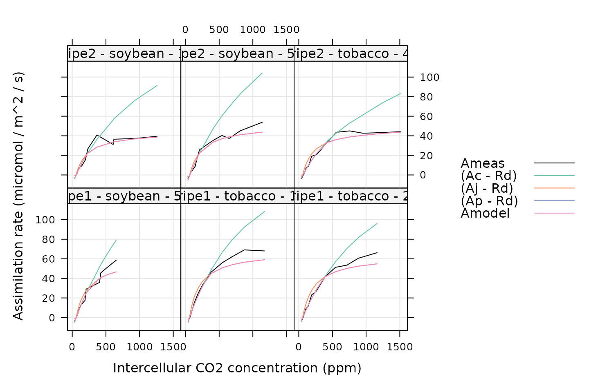

Combining PhotoGEA With Other Packages
Source:vignettes/combining_with_other_packages.Rmd
combining_with_other_packages.RmdOverview
There are many approaches to fitting or otherwise processing pieces
of gas exchange data, and several R packages (such as plantecophys,
plantecowrap,
and photosynthesis)
have been written to implement some of these methods. These R packages
are excellent resources that provide access to well-tested and
peer-reviewed fitting methods. On the other hand, they generally do not
provide tools for a full data analysis pipeline. Instead, these packages
assume that the user has already solved the problems of data translation
and validation; in other words, they assume that the user already has an
appropriately validated data set available as one or R data
structures.
To address this issue, it is possible to use functions from these
other packages within the context of PhotoGEA. In this
case, PhotoGEA can be used to load data, validate it, apply
the functions to subsets of the data, and collect the results, as
described in the Developing a Data
Analysis Pipeline vignette.
The key to combining another package with PhotoGEA is to
create “wrappers” for the other package’s functions. A wrapper is a type
of function whose main purpose is to call another function while making
minimal calculations of its own. Wrappers can be created for many
different purposes, as discussed on Wikipedia. In
this context, wrappers will be used to reformat the inputs and outputs
of a function from another package so they become compatible with
functions from PhotoGEA.
As an example, this vignette will demonstrate how to create two
wrappers of varying complexity for the fitaci function from
the plantecophys package. The general ideas introduced here
can also be used to create wrappers for other functions, although the
details of creating a wrapper are heavily dependent on the details of
the function to be wrapped. Note that creating a wrapper for a fitting
function from another package is essentially a special case of designing
a customized processing function, a topic that is also covered in the Creating Your Own
Processing Tools vignette.
Loading Packages
As always, the first step is to load the packages we will be using.
In addition to PhotoGEA, we will also use the
plantecophys and lattice packages.
If the plantecophys or lattice packages are
not installed on your R setup, you can install them by typing
install.packages('plantecophys') and/or
install.packages('lattice').
Loading and Validating Data
For this example, we will load the same set of C3 A-Ci curves that are used in the Analyzing C3 A-Ci Curves vignette, and we will perform the same steps for organizing and cleaning the data. See that vignette for more details about these steps. For brevity, the commands are not included here, but they can be found at the end of this vignette in Commands From This Document.
Creating a Minimal Wrapper
The fitaci function from the plantecophys
package is a tool for fitting a single C3 CO2
response curve, so it can be thought of as an alternative to the
fit_c3_aci function from PhotoGEA. In the Analyzing C3 A-Ci Curves
vignette, the following command is used to apply fit_c3_aci
to all the response curves in the data set and then consolidate the
results from each curve into a convenient list of tables:
c3_aci_results <- consolidate(by(
licor_data, # The `exdf` object containing the curves
licor_data[, 'curve_identifier'], # A factor used to split `licor_data` into chunks
fit_c3_aci, # The function to apply to each chunk of `licor_data`
fixed = c(NA, NA, NA, NA), # Additional argument passed to `fit_c3_aci`
cj_crossover_min = 100, # Wj must be > Wc when Cc < 100 ppm
cj_crossover_max = 550 # Wj must be < Wc when Cc > 550 ppm
))Ideally, we would like to be able to use a similar command to apply
plantecophys::fitaci to all the curves. However,
plantecophys::fitaci has a different type of input data
table (it uses a data frame while fit_c3_aci uses an
exdf) and produces a different type of output (it returns
an acifit object while fit_c3_aci returns a
list of exdf objects). (There are also a few other
differences that will be discussed later.) In this situation, as
discussed previously, we can use a wrapper function to make
plantecophys::fitaci behave more like
PhotoGEA::fit_c3_aci so it can be used in the same way.
Here is one way to create such a wrapper:
# Make a minimal wrapper for `plantecophys::fitaci`
fit_c3_aci_plantecophys <- function(
replicate_exdf, # an `exdf` object representing a single A-Ci curve
... # additional named arguments to be passed to `fitaci`
)
{
# Call `plantecophys::fitaci` by passing the `replicate_exdf$main_data`
# data frame as the `data` input argument
fit_res <- plantecophys::fitaci(replicate_exdf$main_data, ...)
# Get the identifier columns from the original exdf object as a data frame
replicate_identifiers <- identifier_columns(replicate_exdf$main_data)
# Get a data frame with the fitted values of assimilation and append the
# identifier columns
fits <- fit_res$df
fits <- cbind(replicate_identifiers, fits)
# `plantecophys::fitaci` returns absurdly high values of `Ap` when it cannot
# get a good estimate for `Tp`. These can cause problems when plotting the
# results, so we replace any `Ap` values above 500 micromol / m^2 / s with
# NA.
fits[fits$Ap > 500, 'Ap'] <- NA
# Create a data frame with the parameter values
parameters <- data.frame(
Vcmax = fit_res$par[1, 1],
Jmax = fit_res$par[2, 1],
Rd = fit_res$par[3, 1]
)
parameters$Tp <- if (fit_res$fitTPU) {
fit_res$par[4, 1]
} else {
NA
}
parameters <- cbind(replicate_identifiers, parameters)
# Return a list of two data frames: `fits` and `parameters`
return(list(
fits = fits,
parameters = parameters
))
}Much of the code in fit_c3_aci_plantecophys is devoted
to converting the replicate_exdf input from an
exdf object to a data.frame and returning a
list of data.frame objects that were created from the
return value of fitaci. One subtelty in the code is the use
of the identifier_columns function.
By default, the output from fitaci includes important
information like the modeled assimilation rates and the values of the
key C3 parameters. However, it does not include any of the
“identifying” information that is essential for keeping the results
organized. (In this case, this would be the values of the
species and plot columns.) The
identifier_columns function from PhotoGEA
provides a simple way to retrieve this information from the
replicate_exdf input. To accomplish this, it determines the
columns that only have a single value and returns the singular values of
those columns.
Using identifier_columns rather than directly accessing
the values of species or plot makes the
fit_c3_aci_plantecophys function more flexible. In fact,
all fitting functions in the PhotoGEA package make use of
identifier_columns to keep track of these important pieces
of “metadata.”
Another important point is that we have “regularized” the fitting
results by always including Tp, even when it is not being
fitted. In general, it is easier to work with functions that always
produce the same output quantities.
Now we can apply this function to all the curves in the data set.
Note that we will need to specify a value for the varnames
input argument of plantecophys::fitaci because our columns
have different names than the default ones. This can be accomplished
with the following command, which makes use of by.exdf and
consolidate as in the Analyzing C3 A-Ci Curves
vignette:
# Fit each curve
c3_aci_results <- consolidate(by(
licor_data, # The `exdf` object containing the curves
licor_data[, 'curve_identifier'], # A factor used to split `licor_data` into chunks
fit_c3_aci_plantecophys, # The function to apply to each chunk of `licor_data`
varnames = list( # Additional argument to `fit_c3_aci_plantecophys`
ALEAF = 'A',
Tleaf = 'TleafCnd',
Ci = 'Ci',
PPFD = 'Qin',
Rd = 'Rd'
)
))The results can now be examined using commands similar to the ones used in the Analyzing C3 A-Ci Curves vignette:
# Plot each fit
xyplot(
Ameas + (Ac - Rd) + (Aj - Rd) + (Ap - Rd) + Amodel ~ Ci_original | curve_identifier,
data = c3_aci_results$fits,
type = 'l',
auto.key = list(space = 'right'),
grid = TRUE,
xlab = 'Intercellular CO2 concentration (ppm)',
ylab = 'Assimilation rate (micromol / m^2 / s)',
par.settings = list(
superpose.line = list(col = multi_curve_colors()),
superpose.symbol = list(col = multi_curve_colors())
)
)
# View the parameter values
columns_for_viewing <-
c('instrument', 'species', 'plot', 'Vcmax', 'Jmax', 'Rd', 'Tp')
c3_aci_parameters <-
c3_aci_results$parameters[ , columns_for_viewing]
print(c3_aci_parameters)
#> instrument species plot Vcmax Jmax Rd Tp
#> 1 ripe1 soybean 5a 126.61884 229.5225 0.8502736 NA
#> 2 ripe1 tobacco 1 128.90039 272.3661 0.5237317 NA
#> 3 ripe1 tobacco 2 109.78883 244.9742 0.6525278 NA
#> 4 ripe2 soybean 1 99.85103 158.7873 0.3908915 NA
#> 5 ripe2 soybean 5b 115.84216 189.9087 1.6311796 NA
#> 6 ripe2 tobacco 4 83.51227 178.1061 0.3925865 NAThere are a few things to notice about these commands and the resulting outputs:
- In the plotting command above, we subtract
RdfromAc,Aj, andApbecauseplantecophys::fitaciuses different definitions of these rates that are equivalent toAc + Rd,Aj + Rd, andAp + Rdin our notation. - In the results,
TpandApare bothNAbecause thefitTPUargument ofplantecophys::fitaciwas left at its default value ofFALSE. When we attempt to includeApin the plot,lattice::xyplotsimply does not plot anything because the values areNA.
Creating a Fancier Wrapper
The wrapper above is quite useful because it allows us to easily
apply fitaci to many response curves in a full data set and
automatically combine the results using the by and
consolidate functions. However, it could be improved by
making a few changes that:
- Provide better default values for the column names.
- Check the units of important columns.
- Include more outputs that are calculated by
fitaci. - Return a list of
exdfobjects rather than a list of data frames. - Return only net assimilation rates.
Here is an example of a more complex wrapper that is a bit more
user-friendly than the previous one. In this wrapper, we explicitly
break the code into several sections devoted to checking inputs, calling
fitaci with appropriate units, and collecting outputs:
# Make a better wrapper for `plantecophys::fitaci`
fit_c3_aci_plantecophys <- function(
replicate_exdf, # an `exdf` object representing a single A-Ci curve
a_column_name = 'A',
tleaf_column_name = 'TleafCnd',
ci_column_name = 'Ci',
qin_column_name = 'Qin',
rd_column_name = 'Rd',
useRd = FALSE,
... # additional named arguments to be passed to `fitaci`
)
{
### Check inputs
if (!is.exdf(replicate_exdf)) {
stop('fit_c3_aci_plantecophys requires an exdf object')
}
# Make sure the required variables are defined and have the correct units
required_variables <- list()
required_variables[[a_column_name]] <- 'micromol m^(-2) s^(-1)'
required_variables[[tleaf_column_name]] <- "degrees C"
required_variables[[ci_column_name]] <- 'micromol mol^(-1)'
required_variables[[qin_column_name]] <- 'micromol m^(-2) s^(-1)'
if (useRd) {
# Only check the existence and units of the `Rd` column if it will be used
required_variables[[rd_column_name]] <- 'micromol m^(-2) s^(-1)'
}
check_required_variables(replicate_exdf, required_variables)
# Make sure the user didn't supply their own `varnames` because we will
# automatically define it from the other column name inputs
if ('varnames' %in% names(list(...))) {
stop('do not supply `varnames` when calling fit_c3_aci_plantecophys')
}
### Call function from external packge with appropriate units
fit_res <- plantecophys::fitaci(
replicate_exdf$main_data,
varnames = list(
ALEAF = a_column_name,
Tleaf = tleaf_column_name,
Ci = ci_column_name,
PPFD = qin_column_name,
Rd = rd_column_name
),
useRd = useRd,
...
)
### Collect outputs
# Get the identifier columns from the original exdf object
replicate_identifiers <- identifier_columns(replicate_exdf)
# Get a data frame with the fitted values of assimilation and convert it to an
# `exdf` object, setting the category to `fit_c3_aci_plantecophys` and
# specifying the units for each column
fits <- exdf(fit_res$df)
fits <- document_variables(
fits,
c('fit_c3_aci_plantecophys', 'Ci', 'micromol mol^(-1)'),
c('fit_c3_aci_plantecophys', 'Ameas', 'micromol m^(-2) s^(-1)'),
c('fit_c3_aci_plantecophys', 'Amodel', 'micromol m^(-2) s^(-1)'),
c('fit_c3_aci_plantecophys', 'Ac', 'micromol m^(-2) s^(-1)'),
c('fit_c3_aci_plantecophys', 'Aj', 'micromol m^(-2) s^(-1)'),
c('fit_c3_aci_plantecophys', 'Ap', 'micromol m^(-2) s^(-1)'),
c('fit_c3_aci_plantecophys', 'Rd', 'micromol m^(-2) s^(-1)'),
c('fit_c3_aci_plantecophys', 'VPD', 'kPa'),
c('fit_c3_aci_plantecophys', 'Tleaf', 'degrees C'),
c('fit_c3_aci_plantecophys', 'Cc', 'micromol mol^(-1)'),
c('fit_c3_aci_plantecophys', 'PPFD', 'micromol m^(-2) s^(-1)'),
c('fit_c3_aci_plantecophys', 'Patm', 'kPa'),
c('fit_c3_aci_plantecophys', 'Ci_original', 'micromol mol^(-1)')
)
# Append the identifier columns to the fits
fits <- cbind(replicate_identifiers, fits)
# `plantecophys::fitaci` returns absurdly high values of `Ap` when it cannot
# get a good estimate for `Tp`. These can cause problems when plotting the
# results, so we replace any `Ap` values above 500 micromol / m^2 / s with
# NA.
fits[fits[, 'Ap'] > 500, 'Ap'] <- NA
# Convert `plantecophys::fitaci` outputs to net CO2 assimilation rates for
# consistency with `fit_c3_aci`.
fits[, 'Ac'] <- fits[, 'Ac'] - fits[, 'Rd']
fits[, 'Aj'] <- fits[, 'Aj'] - fits[, 'Rd']
fits[, 'Ap'] <- fits[, 'Ap'] - fits[, 'Rd']
# Add a column for the residuals
fits <- set_variable(
fits,
'A_residuals',
'micromol m^(-2) s^(-1)',
'fit_c3_aci_plantecophys',
fits[, 'Ameas'] - fits[, 'Amodel']
)
# Create an exdf object with the parameter values that are included in the
# fitting result. Note that we do not include RMSE because it is not
# calculated correctly.
parameters <- exdf(data.frame(
Ci_transition = as.numeric(fit_res$Ci_transition),
Ci_transition2 = as.numeric(fit_res$Ci_transition2),
Tcorrect = fit_res$Tcorrect,
Rd_measured = fit_res$Rd_measured,
GammaStar = fit_res$GammaStar,
Km = fit_res$Km,
kminput = fit_res$kminput,
gstarinput = fit_res$gstarinput,
fitmethod = fit_res$fitmethod,
citransition = fit_res$citransition,
gmeso = fit_res$gmeso,
fitTPU = fit_res$fitTPU,
alphag = fit_res$alphag,
Vcmax = fit_res$par[1, 1],
Vcmax_err = fit_res$par[1, 2],
Jmax = fit_res$par[2, 1],
Jmax_err = fit_res$par[2, 2],
Rd = fit_res$par[3, 1],
Rd_err = fit_res$par[3, 2],
ci_star = fit_res$Ci(0),
A_transition = fit_res$Photosyn(Ci=fit_res$Ci_transition)$ALEAF
))
# The value of `Tp` and its error will depend on `fitTPU`
parameters[, 'Tp'] <- if (fit_res$fitTPU) {
fit_res$par[4, 1]
} else {
NA
}
parameters[, 'TPU_err'] <- if (fit_res$fitTPU) {
fit_res$par[4, 2]
} else {
NA
}
# Document the parameter units
parameters <- document_variables(
parameters,
c('fit_c3_aci_plantecophys', 'Ci_transition', 'micromol mol^(-1)'),
c('fit_c3_aci_plantecophys', 'Ci_transition2', 'micromol mol^(-1)'),
c('fit_c3_aci_plantecophys', 'Tcorrect', ''),
c('fit_c3_aci_plantecophys', 'Rd_measured', ''),
c('fit_c3_aci_plantecophys', 'GammaStar', 'micromol mol^(-1)'),
c('fit_c3_aci_plantecophys', 'Km', 'micromol mol^(-1)'),
c('fit_c3_aci_plantecophys', 'kminput', ''),
c('fit_c3_aci_plantecophys', 'gstarinput', ''),
c('fit_c3_aci_plantecophys', 'fitmethod', ''),
c('fit_c3_aci_plantecophys', 'citransition', 'micromol mol^(-1)'),
c('fit_c3_aci_plantecophys', 'gmeso', 'mol m^(-2) s^(-1)'),
c('fit_c3_aci_plantecophys', 'fitTPU', ''),
c('fit_c3_aci_plantecophys', 'alphag', 'dimensionless'),
c('fit_c3_aci_plantecophys', 'Vcmax', 'micromol m^(-2) s^(-1)'),
c('fit_c3_aci_plantecophys', 'Vcmax_err', 'micromol m^(-2) s^(-1)'),
c('fit_c3_aci_plantecophys', 'Jmax', 'micromol m^(-2) s^(-1)'),
c('fit_c3_aci_plantecophys', 'Jmax_err', 'micromol m^(-2) s^(-1)'),
c('fit_c3_aci_plantecophys', 'Rd', 'micromol m^(-2) s^(-1)'),
c('fit_c3_aci_plantecophys', 'Rd_err', 'micromol m^(-2) s^(-1)'),
c('fit_c3_aci_plantecophys', 'Tp', 'micromol m^(-2) s^(-1)'),
c('fit_c3_aci_plantecophys', 'TPU_err', 'micromol m^(-2) s^(-1)'),
c('fit_c3_aci_plantecophys', 'ci_star', 'micromol mol^(-1)'),
c('fit_c3_aci_plantecophys', 'A_transition', 'micromol m^(-2) s^(-1)')
)
# Append the identifier columns to the parameters
parameters <- cbind(replicate_identifiers, parameters)
# Return a list of two data frames: `fits` and `parameters`
return(list(
fits = fits,
parameters = parameters
))
}The code for the wrapper has now gotten significantly longer, but there are several new benefits to the user, such as the following:
- The units of the input columns are checked.
- The wrapper returns
exdfobjects that include units. - The assimilation rates have also all been standardized to net rates.
- The fit residuals are included with the output.
If you are writing a wrapper that will be used often, it may be worth taking the time to add nicer features like these ones.
With this wrapper, we can fit all the curves in a dataset and examine the results using the following code, which is simpler than the previous version:
# Fit each curve
c3_aci_results <- consolidate(by(
licor_data, # The `exdf` object containing the curves
licor_data[, 'curve_identifier'], # A factor used to split `licor_data` into chunks
fit_c3_aci_plantecophys # The function to apply to each chunk of `licor_data`
))
# Plot each fit
xyplot(
Ameas + Ac + Aj + Ap + Amodel ~ Ci_original | curve_identifier,
data = c3_aci_results$fits$main_data,
type = 'l',
auto.key = list(space = 'right'),
grid = TRUE,
xlab = 'Intercellular CO2 concentration (ppm)',
ylab = 'Assimilation rate (micromol / m^2 / s)',
par.settings = list(
superpose.line = list(col = multi_curve_colors()),
superpose.symbol = list(col = multi_curve_colors())
)
)
# View the parameter values
columns_for_viewing <-
c('instrument', 'species', 'plot', 'Vcmax', 'Jmax', 'Rd', 'Tp')
c3_aci_parameters <-
c3_aci_results$parameters[ , columns_for_viewing, TRUE]
print(c3_aci_parameters)
#>
#> Converting an `exdf` object to a `data.frame` before printing
#>
#> instrument [UserDefCon] (NA) species [UserDefCon] (NA) plot [UserDefCon] (NA)
#> 1 ripe1 soybean 5a
#> 2 ripe1 tobacco 1
#> 3 ripe1 tobacco 2
#> 4 ripe2 soybean 1
#> 5 ripe2 soybean 5b
#> 6 ripe2 tobacco 4
#> Vcmax [fit_c3_aci_plantecophys] (micromol m^(-2) s^(-1))
#> 1 126.61884
#> 2 128.90039
#> 3 109.78883
#> 4 99.85103
#> 5 115.84216
#> 6 83.51227
#> Jmax [fit_c3_aci_plantecophys] (micromol m^(-2) s^(-1))
#> 1 229.5225
#> 2 272.3661
#> 3 244.9742
#> 4 158.7873
#> 5 189.9087
#> 6 178.1061
#> Rd [fit_c3_aci_plantecophys] (micromol m^(-2) s^(-1))
#> 1 0.8502736
#> 2 0.5237317
#> 3 0.6525278
#> 4 0.3908915
#> 5 1.6311796
#> 6 0.3925865
#> Tp [fit_c3_aci_plantecophys] (micromol m^(-2) s^(-1))
#> 1 NA
#> 2 NA
#> 3 NA
#> 4 NA
#> 5 NA
#> 6 NAIt’s also easy to plot the residuals now:
# Plot the residuals
xyplot(
A_residuals ~ Ci_original | curve_identifier,
data = c3_aci_results$fits$main_data,
type = 'b',
pch = 16,
grid = TRUE,
xlab = paste0('Intercellular CO2 concentration (',
c3_aci_results$fits$units$Ci_original, ')'),
ylab = paste0('Assimilation rate residual (measured - fitted)\n(',
c3_aci_results$fits$units$A_residuals, ')')
)Commands From This Document
The following code chunk includes all the central commands used throughout this document. They are compiled here to make them easy to copy/paste into a text file to initialize your own script.
# Load required packages
library(PhotoGEA)
library(plantecophys)
library(lattice)
# Define a vector of paths to the files we wish to load
file_paths <- c(
PhotoGEA_example_file_path('c3_aci_1.xlsx'),
PhotoGEA_example_file_path('c3_aci_2.xlsx')
)
# Load each file, storing the result in a list
licor_exdf_list <- lapply(file_paths, function(fpath) {
read_gasex_file(fpath, 'time')
})
# Get the names of all columns that are present in all of the Licor files
columns_to_keep <- do.call(identify_common_columns, licor_exdf_list)
# Extract just these columns
licor_exdf_list <- lapply(licor_exdf_list, function(x) {
x[ , columns_to_keep, TRUE]
})
# Use `rbind` to combine all the data
licor_data <- do.call(rbind, licor_exdf_list)
# Create a new identifier column formatted like `instrument - species - plot`
licor_data[ , 'curve_identifier'] <-
paste(licor_data[ , 'instrument'], '-', licor_data[ , 'species'], '-', licor_data[ , 'plot'])
# Make sure the data meets basic requirements
check_response_curve_data(licor_data, 'curve_identifier', 16, 'CO2_r_sp')
# Remove points with duplicated `CO2_r_sp` values and order by `Ci`
licor_data <- organize_response_curve_data(
licor_data,
'curve_identifier',
c(9, 10),
'Ci'
)
# Only keep points where stability was achieved
licor_data <- licor_data[licor_data[, 'Stable'] == 2, , TRUE]
# Remove any curves that have fewer than three remaining points
npts <- by(licor_data, licor_data[, 'curve_identifier'], nrow)
ids_to_keep <- names(npts[npts > 2])
licor_data <- licor_data[licor_data[, 'curve_identifier'] %in% ids_to_keep, , TRUE]
# Remove points where `instrument` is `ripe1` and `CO2_r_sp` is 1800
licor_data <- remove_points(
licor_data,
list(instrument = 'ripe1', CO2_r_sp = 1800)
)
# Make a better wrapper for `plantecophys::fitaci`
fit_c3_aci_plantecophys <- function(
replicate_exdf, # an `exdf` object representing a single A-Ci curve
a_column_name = 'A',
tleaf_column_name = 'TleafCnd',
ci_column_name = 'Ci',
qin_column_name = 'Qin',
rd_column_name = 'Rd',
useRd = FALSE,
... # additional named arguments to be passed to `fitaci`
)
{
### Check inputs
if (!is.exdf(replicate_exdf)) {
stop('fit_c3_aci_plantecophys requires an exdf object')
}
# Make sure the required variables are defined and have the correct units
required_variables <- list()
required_variables[[a_column_name]] <- 'micromol m^(-2) s^(-1)'
required_variables[[tleaf_column_name]] <- "degrees C"
required_variables[[ci_column_name]] <- 'micromol mol^(-1)'
required_variables[[qin_column_name]] <- 'micromol m^(-2) s^(-1)'
if (useRd) {
# Only check the existence and units of the `Rd` column if it will be used
required_variables[[rd_column_name]] <- 'micromol m^(-2) s^(-1)'
}
check_required_variables(replicate_exdf, required_variables)
# Make sure the user didn't supply their own `varnames` because we will
# automatically define it from the other column name inputs
if ('varnames' %in% names(list(...))) {
stop('do not supply `varnames` when calling fit_c3_aci_plantecophys')
}
### Call function from external packge with appropriate units
fit_res <- plantecophys::fitaci(
replicate_exdf$main_data,
varnames = list(
ALEAF = a_column_name,
Tleaf = tleaf_column_name,
Ci = ci_column_name,
PPFD = qin_column_name,
Rd = rd_column_name
),
useRd = useRd,
...
)
### Collect outputs
# Get the identifier columns from the original exdf object
replicate_identifiers <- identifier_columns(replicate_exdf)
# Get a data frame with the fitted values of assimilation and convert it to an
# `exdf` object, setting the category to `fit_c3_aci_plantecophys` and
# specifying the units for each column
fits <- exdf(fit_res$df)
fits <- document_variables(
fits,
c('fit_c3_aci_plantecophys', 'Ci', 'micromol mol^(-1)'),
c('fit_c3_aci_plantecophys', 'Ameas', 'micromol m^(-2) s^(-1)'),
c('fit_c3_aci_plantecophys', 'Amodel', 'micromol m^(-2) s^(-1)'),
c('fit_c3_aci_plantecophys', 'Ac', 'micromol m^(-2) s^(-1)'),
c('fit_c3_aci_plantecophys', 'Aj', 'micromol m^(-2) s^(-1)'),
c('fit_c3_aci_plantecophys', 'Ap', 'micromol m^(-2) s^(-1)'),
c('fit_c3_aci_plantecophys', 'Rd', 'micromol m^(-2) s^(-1)'),
c('fit_c3_aci_plantecophys', 'VPD', 'kPa'),
c('fit_c3_aci_plantecophys', 'Tleaf', 'degrees C'),
c('fit_c3_aci_plantecophys', 'Cc', 'micromol mol^(-1)'),
c('fit_c3_aci_plantecophys', 'PPFD', 'micromol m^(-2) s^(-1)'),
c('fit_c3_aci_plantecophys', 'Patm', 'kPa'),
c('fit_c3_aci_plantecophys', 'Ci_original', 'micromol mol^(-1)')
)
# Append the identifier columns to the fits
fits <- cbind(replicate_identifiers, fits)
# `plantecophys::fitaci` returns absurdly high values of `Ap` when it cannot
# get a good estimate for `Tp`. These can cause problems when plotting the
# results, so we replace any `Ap` values above 500 micromol / m^2 / s with
# NA.
fits[fits[, 'Ap'] > 500, 'Ap'] <- NA
# Convert `plantecophys::fitaci` outputs to net CO2 assimilation rates for
# consistency with `fit_c3_aci`.
fits[, 'Ac'] <- fits[, 'Ac'] - fits[, 'Rd']
fits[, 'Aj'] <- fits[, 'Aj'] - fits[, 'Rd']
fits[, 'Ap'] <- fits[, 'Ap'] - fits[, 'Rd']
# Add a column for the residuals
fits <- set_variable(
fits,
'A_residuals',
'micromol m^(-2) s^(-1)',
'fit_c3_aci_plantecophys',
fits[, 'Ameas'] - fits[, 'Amodel']
)
# Create an exdf object with the parameter values that are included in the
# fitting result. Note that we do not include RMSE because it is not
# calculated correctly.
parameters <- exdf(data.frame(
Ci_transition = as.numeric(fit_res$Ci_transition),
Ci_transition2 = as.numeric(fit_res$Ci_transition2),
Tcorrect = fit_res$Tcorrect,
Rd_measured = fit_res$Rd_measured,
GammaStar = fit_res$GammaStar,
Km = fit_res$Km,
kminput = fit_res$kminput,
gstarinput = fit_res$gstarinput,
fitmethod = fit_res$fitmethod,
citransition = fit_res$citransition,
gmeso = fit_res$gmeso,
fitTPU = fit_res$fitTPU,
alphag = fit_res$alphag,
Vcmax = fit_res$par[1, 1],
Vcmax_err = fit_res$par[1, 2],
Jmax = fit_res$par[2, 1],
Jmax_err = fit_res$par[2, 2],
Rd = fit_res$par[3, 1],
Rd_err = fit_res$par[3, 2],
ci_star = fit_res$Ci(0),
A_transition = fit_res$Photosyn(Ci=fit_res$Ci_transition)$ALEAF
))
# The value of `Tp` and its error will depend on `fitTPU`
parameters[, 'Tp'] <- if (fit_res$fitTPU) {
fit_res$par[4, 1]
} else {
NA
}
parameters[, 'TPU_err'] <- if (fit_res$fitTPU) {
fit_res$par[4, 2]
} else {
NA
}
# Document the parameter units
parameters <- document_variables(
parameters,
c('fit_c3_aci_plantecophys', 'Ci_transition', 'micromol mol^(-1)'),
c('fit_c3_aci_plantecophys', 'Ci_transition2', 'micromol mol^(-1)'),
c('fit_c3_aci_plantecophys', 'Tcorrect', ''),
c('fit_c3_aci_plantecophys', 'Rd_measured', ''),
c('fit_c3_aci_plantecophys', 'GammaStar', 'micromol mol^(-1)'),
c('fit_c3_aci_plantecophys', 'Km', 'micromol mol^(-1)'),
c('fit_c3_aci_plantecophys', 'kminput', ''),
c('fit_c3_aci_plantecophys', 'gstarinput', ''),
c('fit_c3_aci_plantecophys', 'fitmethod', ''),
c('fit_c3_aci_plantecophys', 'citransition', 'micromol mol^(-1)'),
c('fit_c3_aci_plantecophys', 'gmeso', 'mol m^(-2) s^(-1)'),
c('fit_c3_aci_plantecophys', 'fitTPU', ''),
c('fit_c3_aci_plantecophys', 'alphag', 'dimensionless'),
c('fit_c3_aci_plantecophys', 'Vcmax', 'micromol m^(-2) s^(-1)'),
c('fit_c3_aci_plantecophys', 'Vcmax_err', 'micromol m^(-2) s^(-1)'),
c('fit_c3_aci_plantecophys', 'Jmax', 'micromol m^(-2) s^(-1)'),
c('fit_c3_aci_plantecophys', 'Jmax_err', 'micromol m^(-2) s^(-1)'),
c('fit_c3_aci_plantecophys', 'Rd', 'micromol m^(-2) s^(-1)'),
c('fit_c3_aci_plantecophys', 'Rd_err', 'micromol m^(-2) s^(-1)'),
c('fit_c3_aci_plantecophys', 'Tp', 'micromol m^(-2) s^(-1)'),
c('fit_c3_aci_plantecophys', 'TPU_err', 'micromol m^(-2) s^(-1)'),
c('fit_c3_aci_plantecophys', 'ci_star', 'micromol mol^(-1)'),
c('fit_c3_aci_plantecophys', 'A_transition', 'micromol m^(-2) s^(-1)')
)
# Append the identifier columns to the parameters
parameters <- cbind(replicate_identifiers, parameters)
# Return a list of two data frames: `fits` and `parameters`
return(list(
fits = fits,
parameters = parameters
))
}
# Fit each curve
c3_aci_results <- consolidate(by(
licor_data, # The `exdf` object containing the curves
licor_data[, 'curve_identifier'], # A factor used to split `licor_data` into chunks
fit_c3_aci_plantecophys # The function to apply to each chunk of `licor_data`
))
# Plot each fit
xyplot(
Ameas + Ac + Aj + Ap + Amodel ~ Ci_original | curve_identifier,
data = c3_aci_results$fits$main_data,
type = 'l',
auto.key = list(space = 'right'),
grid = TRUE,
xlab = 'Intercellular CO2 concentration (ppm)',
ylab = 'Assimilation rate (micromol / m^2 / s)',
par.settings = list(
superpose.line = list(col = multi_curve_colors()),
superpose.symbol = list(col = multi_curve_colors())
)
)
# View the parameter values
columns_for_viewing <-
c('instrument', 'species', 'plot', 'Vcmax', 'Jmax', 'Rd', 'Tp')
c3_aci_parameters <-
c3_aci_results$parameters[ , columns_for_viewing, TRUE]
print(c3_aci_parameters)
# Plot the residuals
xyplot(
A_residuals ~ Ci_original | curve_identifier,
data = c3_aci_results$fits$main_data,
type = 'b',
pch = 16,
grid = TRUE,
xlab = paste0('Intercellular CO2 concentration (',
c3_aci_results$fits$units$Ci_original, ')'),
ylab = paste0('Assimilation rate residual (measured - fitted)\n(',
c3_aci_results$fits$units$A_residuals, ')')
)